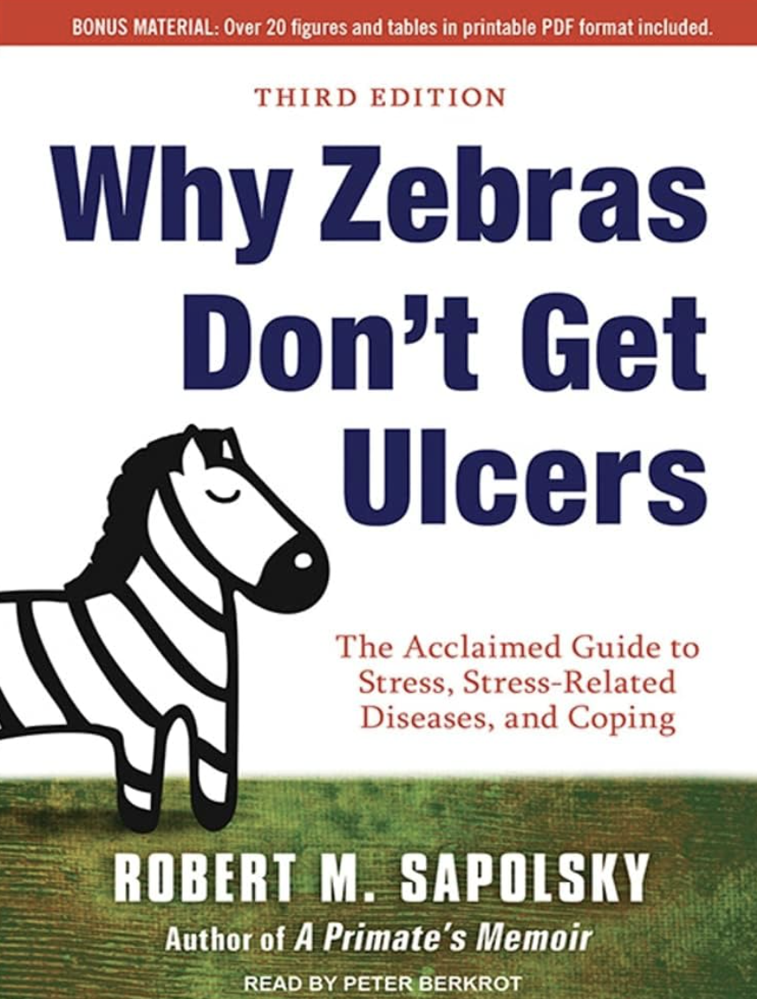

서울대학교 심리학과 최인철 교수 특강
팀장은 지키는 사람이다. 자신을, 가족을, 그리고 좋은 팀을.
한 줄 요약
리더의 진짜 정체성은 ‘성과를 내는 사람’이 아니라 ‘위로는 페이스메이커가 되고, 아래로는 드림팀을 만드는 사람’이다.
팀장은 위·아래 사이에 끼어, 다른 구성원이 갖지 못한 독특한 심리적 어려움을 진다. 데이터상 행복도가 가장 낮은 건 팀원, 그다음이 팀장, 임원·CEO로 갈수록 좋아진다. 이유는 디맨드 자체가 아니라 디맨드와 리소스의 균형 때문이다.
위에서 내려오는 원론적이고 불투명한 지시를 실행 가능한 형태로 번역해야 하는 위치. 한때 같은 팀원이었던 동료들의 경계, 다양한 생각을 하나로 묶어내야 하는 부담, 리더이자 플레이어라는 이중 역할까지 — 어디에도 완전히 속하지 못한다는 감각.
어느 날 차를 몰고 출근하는데, ‘내가 죽어야 이 일이 끝나나’ 그 생각이 들더라는 거예요. — 어느 LG전자 팀장의 1:1 인터뷰

스탠퍼드 신경과학자 로버트 새폴스키의 질문이다. 인간과 얼룩말은 같은 스트레스 반응 시스템을 가지고 있다. 편도체가 위협을 감지하고, 코르티솔이 분비되며, 교감신경계가 활성화되어 혈압을 올린다. 다리 근육으로 피를 빨리 보내야 도망칠 수 있다.
위기가 끝나면 부교감신경계가 작동해 모든 게 제자리로 돌아간다. 그렇게 설계되어 있다.
교감신경계가 만성적으로 켜진다. 혈관 내벽이 손상된다. 염증이 생기고 LDL 콜레스테롤이 침착되어 혈관이 좁아진다. 그러다 떨어진 혈전 하나가 어느 순간 수직으로 서서 혈관을 가로막는다. 급성 심근경색.
03 · 강연자의 사례
3년 전 토요일 오후, 강남 신사동. 갑자기 겨드랑이와 등에 살면서 한 번도 경험해보지 못한 강도의 통증. 평소 운동하고, 고혈압 없고, 콜레스테롤 정상이고, 정기검진을 받던 사람. 리스크 팩터가 거의 없었다.
구급차로 한남대교 건너 순천향대학병원. 관상동맥 3개 중 2개가 막혀 있었다. 스텐트 3개를 넣었다. 시술 후 의사가 신신당부했다. “이런 위치 갑자기 막히면 생존 확률 10%입니다.”
그렇게 내가 이 사람들을 위해 열심히 일하고 있다고 생각했는데, 내가 나를 관리하지 못해서 이런 일이 생기면 그 피해가 고스란히 가족에게 간다. — 시술대 위에서 든 단 하나의 생각: “아파트 대출금은 누가 갚지?”
리더로서 잘하기 위해 나를 잘 지켜야 한다는 건 약간 현실성이 없다고 그는 말했다. 마음을 관리해야 하는 가장 큰 이유는 내가 그렇게 소중하게 생각하는 가족을 위해서다.
04 · 행복 연구 학자들이 평정한 효과적 방법
대부분 낯설지 않다. 우리가 잘 실천하지 못하고 있을 뿐이다.
위스콘신 대학 신경과학자의 실험. 부부를 MRI에 넣고 빨간 도형이 나타나면 20% 확률로 전기충격이 온다고 알려준다. 불확실성이 불안을 증폭시킨다. 편도체가 활성화된다. 그때 남편이 손을 잡아주면 — 편도체 반응이 줄어든다.
다른 남자가 잡아도 효과가 있다. 남편이 잡으면 더 크다.
WHO에 따르면 시간당 전 세계적으로 약 300명이 외로움으로 죽어간다. 외로움이 사망에 끼치는 위험은 흡연과 동일하다. 흡연은 경계하면서, 관계는 그만큼 인식하지 못한다.
06 · 약보다 강한 것
새폴스키 교수는 우울증을 ‘암보다 끔찍한 병’이라 부른다. 우울의 본질은 쾌락의 실종이다. 인간이 스트레스를 이겨내는 최강의 히든카드인 쾌감 자체가 사라진다.
외부 약 없이 시냅스의 신경전달물질·도파민을 늘리는 방법을 과학자들은 오랫동안 찾아왔다. 효과가 들쭉날쭉했다. 그런데 일관되게, 가장 큰 효과 크기로 검증된 단 하나 — 운동이다.
운동하지 않는 사람의 두 가지 특징. 자기에게 맞는 운동이 뭔지 알아보다가 안 한다. 자기에게 맞는 시간대를 따지다가 안 한다. That’s bullshit. — Robert Sapolsky, Why Zebras Don’t Get Ulcers
필요한 건 운동의 총량을 늘리는 것뿐이다. 어느 시간대든, 어떤 종목이든, 재발해서 운동량을 늘려라.
1950년대 샌프란시스코의 한 심장 전문 병원. 천갈이 업자가 의사에게 말했다. “선생님 병원만 의자 앞부분과 손잡이가 빨리 닳습니다.” 환자들은 의자 끝에 걸터앉아 안절부절못하고 손잡이를 뜯고 있었다. 여기서 ‘타입 A 성격’이라는 개념이 도출됐다.
심장 전문의 Meyer Friedman과 Ray H. Rosenman은 그 의자 패턴을 단서로 환자들의 행동을 추적했다. 1959년 JAMA에 발표한 논문 — “Association of Specific Overt Behavior Pattern with Blood and Cardiovascular Findings” 에서 타입 A라는 개념이 처음 명명됐다.
이어진 Western Collaborative Group Study는 39~59세 건강한 남성 3,154명을 8.5년간 추적했다. 결과 — 타입 A는 같은 조건의 타입 B에 비해 관상동맥 질환 발병률이 2배 이상이었다.
후속 연구가 쌓이면서 이야기가 정교해졌다. Duke 대학 Redford Williams는 타입 A 전체가 아니라 그 안의 적대성·냉소(hostility)만이 심장 질환과 통계적으로 유의하게 연결된다는 것을 보였다.
Myrtek(2001)의 메타분석도 같은 결론에 도달했다 — 타입 A 자체의 효과 크기는 유의하지 않았으나(R=0.003), 적대성은 관상동맥 질환과 유의한 연관(R=0.022, p=0.003)을 보였다. ‘바쁘고 효율을 좇는 것’ 자체보다 타인을 향한 분노와 냉소가 진짜 위험 신호다.
08 · 찰리 멍거의 7살
워런 버핏의 파트너 찰리 멍거. 99세에 세상을 떠났다. 워싱턴 포스트 부고 인터뷰. “성공이 전적으로 자기 능력·노력 때문이라는 풍토를 어떻게 보냐”는 질문에 그는 한 문장으로 답했다.
I think that’s nonsense. — Charlie Munger
1931년 오마하. 7살 남자아이와 여자아이가 그네를 타고 놀고 있었다. 유기견이 갑자기 튀어나와 예고도 없이 여자아이를 물었다. 여자아이는 감염으로 며칠 뒤 죽었다. 남자아이는 털끝 하나 다치지 않았다.
그 7살 남자아이가 바로 찰리 멍거였다.
나는 내가 왜 그 개의 공격을 받지 않았는지 모른다. 굉장히 많은 걸 이룬 것처럼 보이지만, 자세히 들여다보면 운이 좋았다.
레이디 가가의 정신과 의사 폴 콘티는, 멘탈 헬스를 두 단어로 정의했다.
이 두 가지가 함께 있을 때, 사자에게 끊임없이 쫓기지 않는다.
09 · 리더의 정체성
2017년 5월. Nike의 Breaking 2 프로젝트. 통계 모형으로는 2040년대에야 깨질 줄 알았던 마라톤 2시간 벽. 킵초게가 1시간 59분 40초로 결승선을 통과했다.
킵초게가 2시간을 깨는 게 확실해지는 그 순간, 앞에서 뛰던 페이스메이커들이 전부 뒤로 빠져 박수치며 따라 들어왔다. 마치 자기 일인 양 좋아하면서.
회사가 우리를 팀장으로 임명한 건, 위에 있는 리더의 드림팀 멤버가 되어달라는 요청이다. 내가 가진 비전, 이 회사의 비전을 이뤄낼 수 있는 멤버가 되어 달라는 것.
The right people. — 1997년 컴백 당시 스티브 잡스의 답: “What hope did you see?”
이 정체성이 분명하다면, 명상과 좋은 관계 같은 ‘보호 장치’를 넘어 — 우리를 더 공격적으로 나아가게 하는 가장 강력한 마음의 무기가 된다.
추가 학습 포인트
책 · Robert Sapolsky, Why Zebras Don’t Get Ulcers (한국 번역본: 『스트레스』). 강연자가 “최근 3년 읽은 책 중 으뜸”으로 추천. 영어 원서를 권함.
인물 · Robert Sapolsky · Andrew Huberman · Paul Conti · Charlie Munger · Jim Collins · Eliud Kipchoge
개념 · Type A Personality · BDNF · SSRI · Social Regulation of Neural Response to Threat (Coan, Schaefer, Davidson, 2006) · Agency + Gratitude
후속 질문 · 우리 팀의 행복도 데이터는 어떻게 운영하는가? 팀장에게 주어진 Resource는 Demand와 균형이 맞는가? KPI 외에 ‘좋은 팀을 만든 리더’를 인정하는 메커니즘이 있는가?